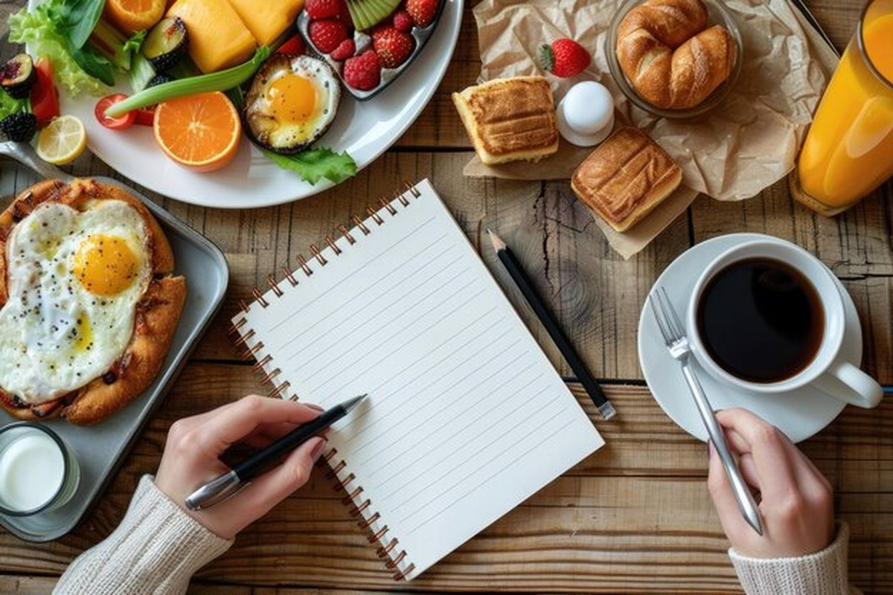

Add the date, meal, foods, and a short note to the table below, and it becomes your running log — no separate spreadsheet needed.
Short entries are the easiest to keep up with. A quick note right after a meal takes less than a minute, which makes it far more likely you'll actually stick with logging every day instead of trying to remember everything at night.
Below the log is a quick calorie reference for meals that are hard to find accurate numbers for in most tracking apps, especially Indian dishes like roti and dal. More meals get added here over time.
| Date | Meal | Food Items | Notes |
|---|---|---|---|
| Aug 25 | Breakfast | Oatmeal, banana, coffee | Filling |
| Aug 25 | Lunch | Rice, dal, salad | Home-cooked |
| Aug 25 | Dinner | Grilled veggies, roti | Light |